Chapter 2 : Computer Based Arithmetic
Chapter Objectives
At the completion of this chapter, you should understand how to:
- perform binary calculation;
- store numbers into computer words;
- integer
- fraction
- mixed number;
- store numbers into computer words using;
- sign modulus method
- 2's complement method;
- perform 2's complement subtraction;
- shift operations.
2.1 Binary Addition
Binary addition for fixed point numbers is done as follows:
- The numbers to be added are aligned by their binary points.
- Starting from the least significant (rightmost) digit, a corresponding pair of digits (in the same column) are added according to the rules of binary addition.
- If a column has a carry from the previous column, the carry digit has to be added also.
- Repeat steps (ii) and (iii) for each column until the most significant (leftmost) digit has been added.
2.1.1 Rules for Binary Addition
1+1 = 0 < and carry over 1 to add to next column
1+0 = 1 (i.e. 1+1 = 10)
0+1=1
0+0=02.1.2 Examples of Binary Addition
Example:
1010
+ 0111
-------
10001Example:
1010.01
+ 0111.11
----------
10001.00Example:
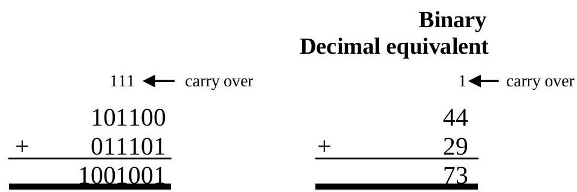Example:
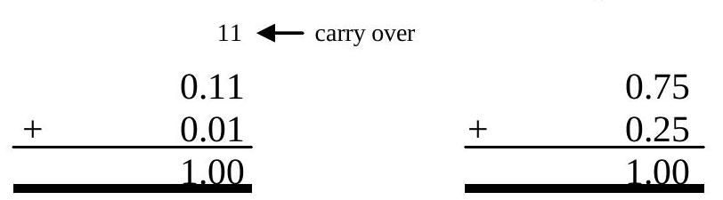2.2 Binary Subtraction
2.2.1 Rules for Binary Subtraction
2.2.2 Examples of Binary Subtraction
Example:
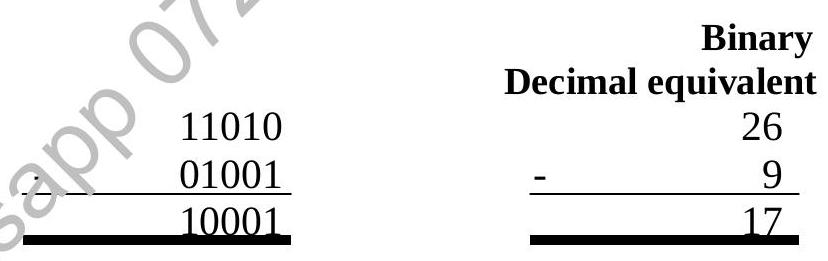Example:
| Binary | Decimal equivalent | |
|---|---|---|
| 1010.00 | 10 | |
| - 1000.11 | - 8.75 | |
| 0001.01 | 1.25 | |
The subtraction process can be more clearly illustrated in the following example.
Example:
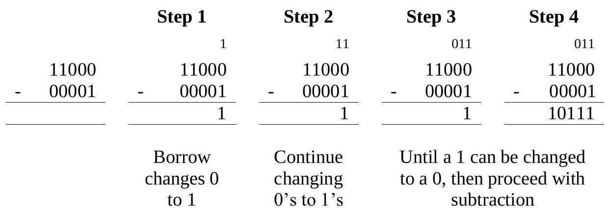2.2.3 Examples on Successive Borrows in Binary Subtractions
Example: $8_{10} - 2_{10} = 6_{10}$
Example: $9_{10} - 7_{10} = 2_{10}$
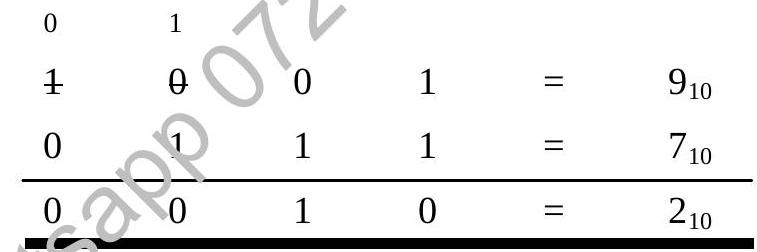2.3 Binary Multiplication
2.3.1 Rules for Binary Multiplication
Copy the multiplicand when the multiplier digit is 1; do not when it is 0. Shift as in decimal multiplication. Add the resulting binary numbers according to the binary addition rules.
2.3.2 Examples of Binary Multiplication
Example:
| Binary | Decimal equivalent |
|---|---|
1101\nx 1100\n------\n 0000\n 0000\n1101\n1101\n--------\n10011100 | 13\nx 12\n----\n\n\n\n\n----\n 156 |
Example:
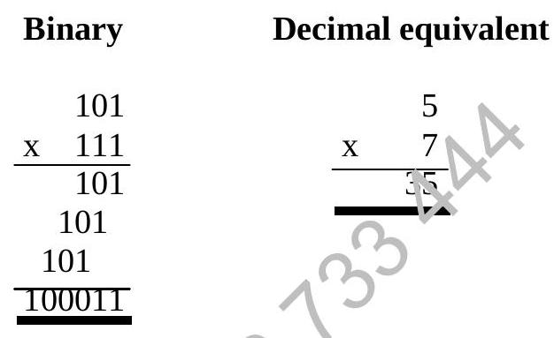2.3.3 Handling of Carries in Multiplication
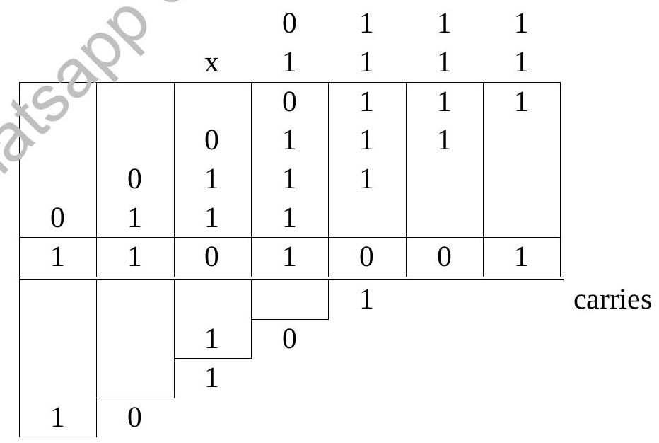The product is $11010011_{2}$
Example: $4_{10} \times 3_{10} = 12_{10}$
0100 (4)
x 0011 (3)
-------
0100
0100
0000
0000
-------
0001100 (12)Example: $10_{10} \times 14_{10} = 140_{10}$
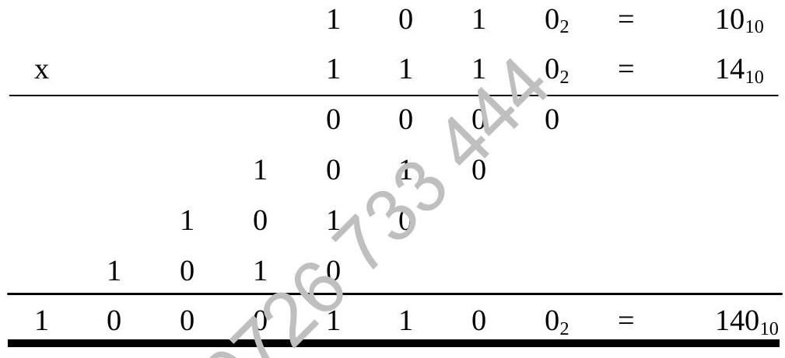2.4 Binary Division
Just as binary multiplication is a series of shift and add operations, binary division is a series of shift and subtract operations.
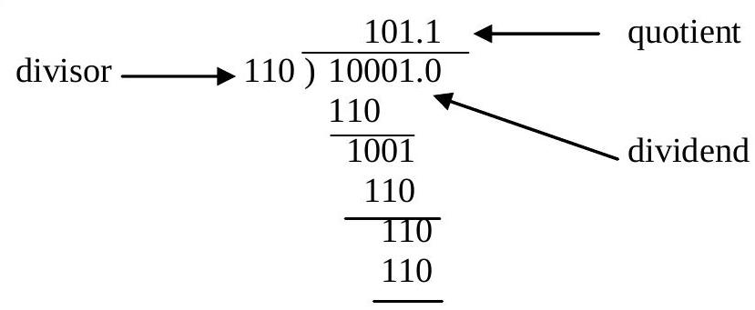Binary Explanation:
- Compare divisor (110) with first bits of dividend (100). Divisor is larger. Quotient bit is 0.
- Bring down next bit (0). Compare divisor (110) with 1000. Divisor is smaller. Quotient bit is 1. Subtract 110 from 1000 (Result 10).
- Bring down next bit (0). Compare divisor (110) with 100. Divisor is larger. Quotient bit is 0.
- Bring down next bit (1). Compare divisor (110) with 1001. Divisor is smaller. Quotient bit is 1. Subtract 110 from 1001 (Result 11).
- Remainder (11) is smaller than divisor (110). Stop.
Decimal Equivalent: $33 \div 6 = 5$ remainder 3
2.4.1 Example of Binary Division
Example: $\frac{32_{10}}{3_{10}} = (10 \frac{2}{3})_{10}$ or 10 remainder 2
1010 (Quotient = 10 decimal)
_______
11 | 100000
11
---
0100
11
---
010 (Remainder = 2 decimal)2.5 Number Storage in the Computer Word
Computer storage is arranged in words. A word is defined as a unit of data for the machine. Words vary in length on different types of machines. Common word sizes are 8, 12, 16, 24 and 32 bits.
| Term | Description |
|---|---|
| Bit | A 'bit', short for binary digit, is the smallest unit of information stored (0 or 1). |
| Byte | 8-bit string of binary bits. Often corresponds to one character. |
| Word | A machine-dependent unit of data, usually a multiple number of bytes (e.g., 16-bits, 32-bits). |
| Character | May be represented by binary codes (e.g., ASCII, usually 8 bits). Often used interchangeably with "byte". |
2.5.1 16 Bit Microcomputers
Most of the popular microcomputer based systems used in schools and colleges are "16-bit micros". In these "machines" each word in memory is 2 bytes in length (i.e. 16-bits). Each word is sufficiently large to hold the binary code for one character but program instructions are normally too long to fit into a single word and are therefore spread over two or three words in sequence.
2.5.2 32 Bit Machines
Some of the more modern microcomputers are "32-bit micros". Many minicomputers are also "32-bit machines". Each word is four bytes (32-bits) in length, i.e. the "word length" is 32-bits.
2.5.3 Size Limits of Data
Computer storage is of finite size. This limits the size of numbers which can be stored and their accuracy.
Example: 16 bit words are common and hold numbers from -32768 to 32767.
2.6 Storage of Numbers
It is important to know the format of storage before interpreting the given 0's and 1's stored in a computer word. There are many formats of storing numbers:
- Integer (using sign modulus format)
- Integer (using 2's complement format)
- Fraction
- Mixed number
- Floating point number
2.6.1 Storage of Integers Using Sign Modulus Method
Types of numbers
- Even if you know that the data is numeric, make sure you have the right format
and there are many other formats
2.6.2 Storage of Integers
735 decimal = 1011011111 (10 bits)
Add 2 bits "padding" in a 12 bit word
|0|0|1|0|1|1|0|1|1|1|1|1|By convention, the first (left-hand) bit is the sign bit
Therefore only 11 bits are left for the number value
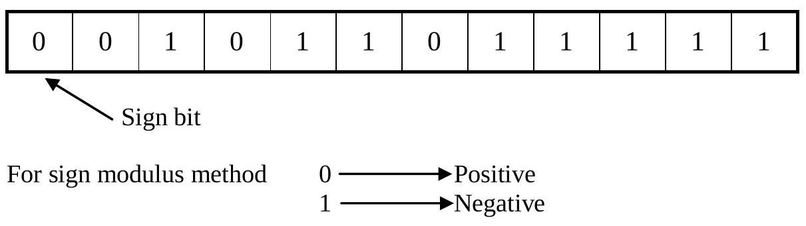Small numbers stored in 12-bit words are mostly "padding" bits
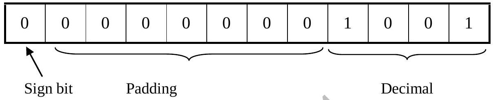Padding is not really wasteful, it is necessary to make the calculation methods work properly
The upper limit for storing a number in a 12-bit word is $011111111111 = 2047$ decimal
The range of a given computer n bit word for sign modulus is $-(2^{n-1})$ to $(2^{n-1}-1)$. Larger numbers need double length.
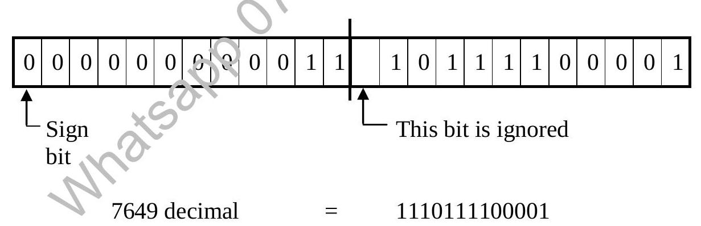23 bits can hold $4194303_{10}$